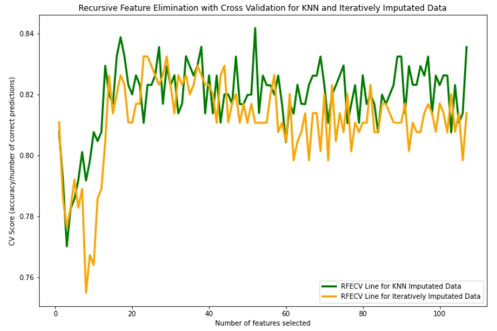
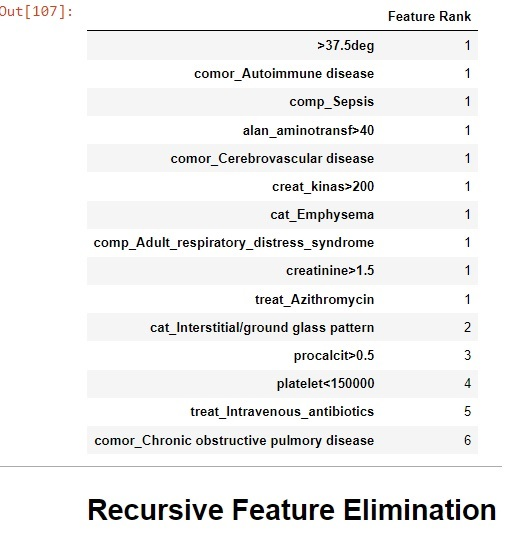

This was one of the hardest projects I've worked on. BUT, it was
a very interesting experience. I've learned a lot from other great people while working with
them. My teammates were very cooperative and helpful. It gave me a taste of how machine learning
problems and software projects both work outside of the classroom.
Since this isn't my resume or LinkedIn where I have to cram everything and pretend
that I'm the MVP (or intern in this case) when I know our work shows I'm not. Even while I
was working on various parts in our projects for Vodafone, I honestly didn't know what kind
my work was classified as. My advisor claimed I had the role of a data engineer. Our Liasions
had no idea and I was assigned the machine learning role. Eventually, I come to learn that
machine learning is actually accurate. Only after some interviews that I managed to get since
my graduation had confirmed that. With this information, now I'll get down to our projects
and my responsibilities.
My team's tasks were to use the confidential Covid-19 data to explain the Covid-19 situation
at the time to a general audience. We were also told to find any possible unknown predictors
for covid-19 patients of four particular cases, and minimizing the number of predictors
while maximizing our model's accuracy. This includes visualizations and presentations
that are available to and easily understood by the general public.
All of my teammates followed the common strategy of learning all of our possible tools and
focus on what we are comfortable with to achieve our goals.
I did data preparation, data analysis, analyzing our results, and visualize
the results and analytics all through Python and it's libraries, and Jupyter Notebook. And
front-end development when needed using HTML5 and CSS. I also contributed to training and
analyzing our models. However, I did not contribute to visualizations created in Tableau or
D3 library of Javascript that were used. I also did not contribute to the development of our
mobile application. Our machine learning lead was Fredi Garcia. Initially my team elected me
to be machine learning lead, but I vetoed my team's decision because I was not confident in
management tasks. I was more focused on making progress on our work, and at times I had to
manage in my lead's place. I used different algorithms to prepare the data before using the
prepared data on logistic regression models. The picture on the left shows a graph I've made
to visualize the results of using the Chi Square Test of fitness after preparing the data
using KNN. The data was for mortality cases for a specific general population.


The image above on the left is the analysis of different algorithms I had used to prepare the
data for hospitalization cases for another specific population. This graph confirmed my lead's
work that approximately 18 features is the least number of features with an accuracy of about 83%,
a reasonable tradeoff.
This also confirmed his assumptions that KNN outperformed Iterative Imputation.
The image above on the right is the result of using RFE to reduce the number of predictors for
mortality cases of another specific population.
To be clear, I don't remember the results of the of Fredi's work. We both worked together when
opportunities arise and independently. My work confirms that my team's and his works are accurate.